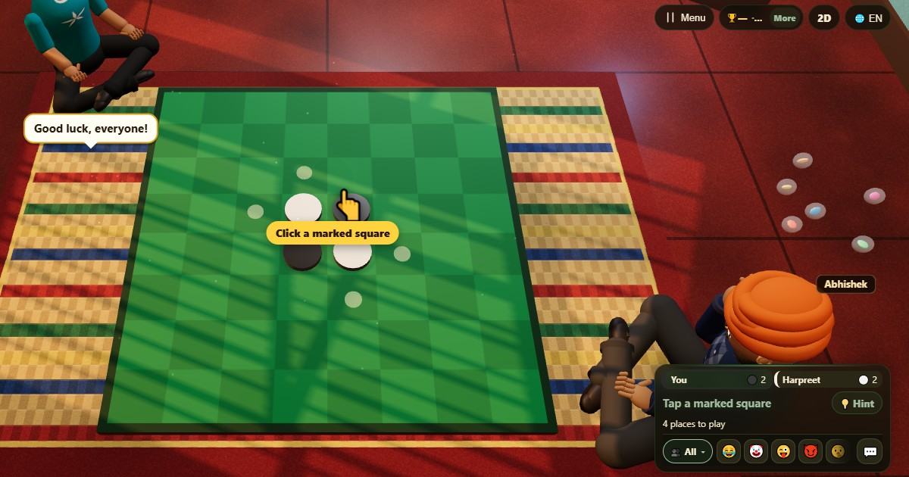

Reversi (Reversi)
- 👥 2 oyuncu
- Kutu oyunları
- 🆓
Türkçe rehber
Rakip rengi kendi taşlarının arasına al ve çevir.
English name: Reversi

Nasıl oynanır
- Oyun ortada dört taşla başlar. Önce siyah oynar.
- İşaretli bir kareye taş koy. Hamle, yeni taşla senin başka bir taşın arasında düz bir çizgide en az bir rakip taşı sıkıştırmalıdır.
- Sıkışan tüm taşlar her yönde aynı anda senin rengine döner.
- Geçerli hamlen yoksa sıran atlanır. Hiçbir oyuncu oynayamadığında oyun biter.
Puanlama
Puanın, sonunda senin renginde görünen taşların sayısıdır.
Kim kazanır
Sonunda en çok taşı olan kazanır. Eşit sayı beraberliktir.
Sık sorulan sorular
Hamle yapamazsam ne olur?
Sıran otomatik olarak atlanır ve geçerli bir hamlen olur olmaz yeniden oynarsın.
İlk kim oynar?
Masadaki ilk oyuncunun oynadığı siyah.
Nasıl oynanır
- Misafir olarak: Üyelik ve giriş yok. Bir ad seç ve hemen oyna.
- Bilgisayara karşı: Kimse yoksa bilgisayar oyuncuları boş yerleri doldurur. Kolay, normal veya zor.
- Online: Dünyanın her yerinden oyuncularla açık bir masaya otur.
- Yakındaki arkadaşlarla: Oyunu bir telefonda başlat, kodu veya QR kodu paylaş. Arkadaşların kendi telefonlarından katılır.
- Tek telefonda: Telefonu sırayla elden ele verin: bütün aile için tek cihaz yeter.
Diğer diller
- हिन्दी: रिवर्सी
- Hinglish: Reversi
- Español: Reversi
- Português: Reversi
- Français: Reversi
- Deutsch: Reversi
- Bahasa Indonesia: Reversi
- Italiano: Reversi
- 日本語: リバーシ
- 한국어: 리버시
- 中文: 黑白棋
- Русский: Реверси
- اردو: ریورسی
- नेपाली: रिभर्सी
- বাংলা: রিভার্সি
- English: Reversi · Tüm kurallar (İngilizce)
Oyun fikirleri
Tüm oyunlar


ChitPlay'de gerçek para, bahis veya ödül yoktur. Puanların değeri yoktur.